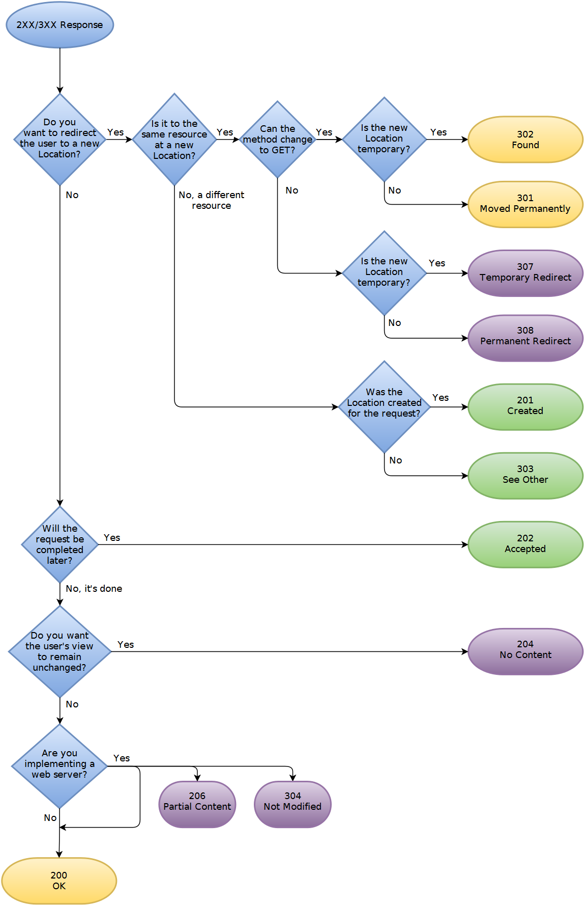

redirect를 위한 HTTP 상태 코드 301과 302에 대해 잘 모르겠다면 아래 링크를 참고하고 글을 읽도록 하자.
301리디렉션 & 302리디렉션의 차이(사용법)
307 Temporary Redirect vs 308 Permanent Redirect
307은 302와 유사하고, 308은 301과 유사하다.
다만 차이점이 있다면 전송 받은 HTTP Method를 유지한다는 것이다.
301과 302는 redirect 시킬 때 method를 get으로 바꿔서 전송한다.
따라서 get 요청을 보낼 때는 문제가 없지만 post 메소드를 요청했을 때 문제가 발생할 수 있다.
http to https redirect를 구현할 때 301 또는 302 상태 코드를 쓰게 되면
http 프로토콜을 통해 post 메소드로 날아온 게 https 프토토콜을 통해 get 메소드로 변경되면서 컨트롤러나 라우터에 매핑되는 URI가 없어서 오류가 나게 된다.
따라서 301 대신에 308을, 302 대신에 307을 쓰면 좀 더 안전하게 redirect 시킬 수 있다.
또한 이제 301과 302를 redirect라는 명칭으로 부를 수도 없다.
301은 Moved Permanently로, 302는 Found로 명칭이 변경되었다.
지금 당장 쓸 수 있나?
MDN - 307 Temporary Redirect
MDN - 308 Permanent Redirect
클라이언트 측에서는 문제가 없어보인다.
308 응답 코드는 nginx 1.13.0에 추가되었다.
하지만 aws ec2에서 nginx 버전을 확인하면 아래와 같이 나온다.1
2nginx -v
# nginx version: nginx/1.12.1
또한 yum으로 업데이트 때려봐도 이게 최신버전이라고 나온다.
설치하려면 복잡하고 불안해서 못하겠다…
Apache는 2부터 지원하는 것 같은데 정확히 몇 부터 지원하는지는 모르겠다…
yum 으로 설치해도 사용이 가능한지는 모르겠다. (절대 귀찮아서 그러는 게 아님…)
마무으리
의외로 클라이언트는 지원을 잘 하는데 웹서버가 지원을 안 해서 의외였다.
What’s difference between HTTP 301 and 308 status codes?에 더 자세한 답변이 있고,
Why doesn’t HTTP have POST redirect?도 참고하자.
그리고 아래 그림이 정말 잘 정리가 돼있는 것 같다.
